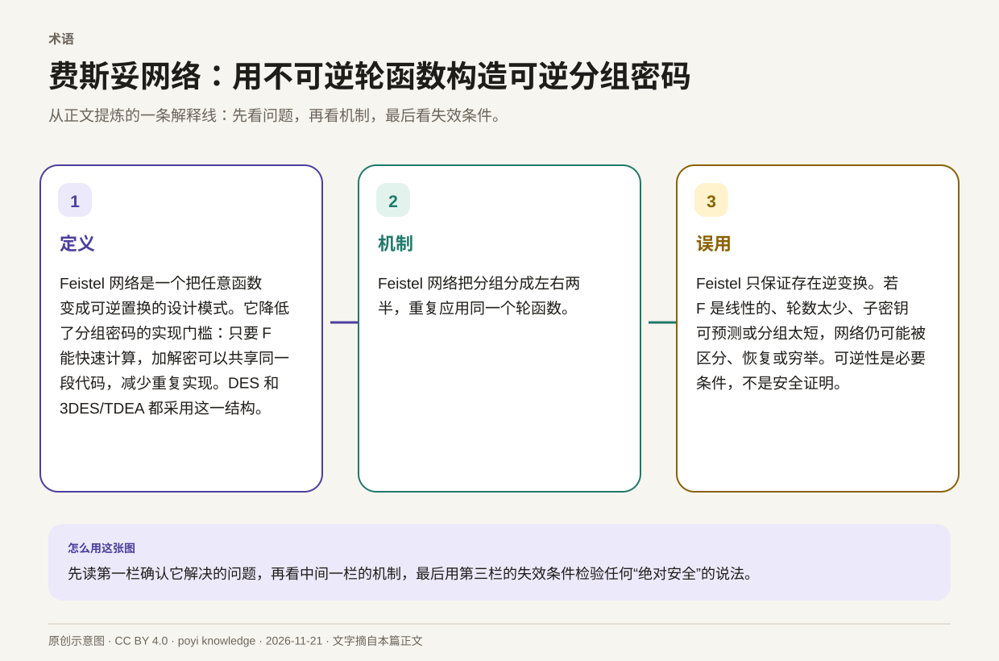

原理与机制
术语：费斯妥网络（Feistel Network）。Feistel 网络把分组分成左右两半，重复应用同一个轮函数。设第 i−1 轮的状态为 (L_{i−1}, R_{i−1})，第 i 轮计算：
R_i = L_{i−1} ⊕ F(R_{i−1}, K_i)
其中 F 是轮函数，K_i 是该轮子密钥。做完 n 轮后，把左右两半交换，输出 (R_n, L_n)。交换不是装饰：它让解密可以使用同一套轮函数和相反顺序的子密钥。解密从 (R_n, L_n) 开始，反向执行：
L_{i−1} = R_i ⊕ F(L_i, K_i)
因此无论 F 是否可逆、是否一一映射，整个 Feistel 网络都可逆。这是它最重要的工程性质：设计者可以用一个非线性的、不可逆的 F，仍然得到一个可逆的分组密码。Feistel 网络可以是平衡的（两半等长，例如 DES 的 32+32 位）或不平衡的（两半长度不同）。轮数、F 的结构、子密钥调度和分组长度共同决定具体密码的安全性和性能；Feistel 只规定状态如何更新，不规定 F 必须是什么。与代换—置换网络（SPN）相比，Feistel 不需要为解密单独实现逆 S 盒和逆线性层。SPN 的每一步通常必须可逆，Feistel 只要求 F 确定；代价是每轮只更新一半状态，达到同等扩散通常需要更多轮。

为什么重要
Feistel 网络是一个把任意函数变成可逆置换的设计模式。它降低了分组密码的实现门槛：只要 F 能快速计算，加解密可以共享同一段代码，减少重复实现。DES 和 3DES/TDEA 都采用这一结构。它也是可证明安全理论的早期对象。该定理归给 Luby 与 Rackoff（1988 年）：在轮函数为伪随机函数的模型下，3 轮 Feistel 网络是伪随机置换，4 轮是强伪随机置换（可抵抗选择密文攻击）。本档只有 3 轮那一半可核——登记的 1988 条目没有留存正文，而 HAC 以“under suitable assumptions”转述该结论。这个结果说明轮数不是随便选的，但它依赖理想化模型，不能直接证明某个具体密码安全。理解 Feistel 也有助于区分结构性质和算法安全性。Feistel 保证可逆，不保证安全；安全取决于 F、子密钥、轮数、分组长度和攻击模型。
应用与实例
DES 是最著名的平衡 Feistel 实例：64 位分组，左右各 32 位，16 轮，轮函数由扩展置换、与子密钥异或、S 盒和 P 置换组成。3DES/TDEA 按 E-D-E 顺序执行三次 DEA 运算，因而内部共有 48 个 DES 轮；它仍是 64 位分组。具体的轮函数和密钥调度属于 DES/TDEA 实体，本文不重复。Feistel 结构也出现在其他分组密码中，但它们的具体 F、轮数和分组长度不同；不能因为都是 Feistel 就认为它们有相同的安全边界。具体算法需要各自的证据和攻击分析。在教学中，Feistel 适合演示可逆性不要求轮函数可逆、状态机、扩散与轮数、以及结构与实例的区分。它不是一个可直接部署的密码，而是一个构造模板。
边界与攻击面
Feistel 只保证存在逆变换。若 F 是线性的、轮数太少、子密钥可预测或分组太短，网络仍可能被区分、恢复或穷举。可逆性是必要条件，不是安全证明。本档留存文本能证到的只有 3 轮那一半：HAC 记述当轮由伪随机函数构成时，某个变体在「under suitable assumptions」（合适假设下）可证明安全。4 轮的强伪随机/选择密文加强，以及把轮函数限定为独立的说法，本档没有任何留存来源这样表述（HAC 确实用「independent」这个词，但说的是别处）；而本档登记的 Luby–Rackoff 条目根本没有留存正文。真实密码的 F 是固定的、由密钥参数化的公开函数，轮子密钥也不是独立随机函数。把 Luby–Rackoff 直接套到 DES 上，会忽略具体 S 盒、密钥调度和已知攻击。### 轮数与扩散
平衡 Feistel 每轮只改变一半状态；一轮后，输入左半的变化只影响下一轮的右半。达到充分扩散需要足够轮数和合适的 F。轮数不足会留下结构性区分器；轮数增加会提高成本，但不自动修复 F 的缺陷。### 分组长度与实例限制
Feistel 不规定分组长度。DES/TDEA 的 64 位分组会带来生日碰撞和 Sweet32 类风险，但这是具体实例的限制，不是 Feistel 结构的普遍属性。一个使用 128 位分组的 Feistel 密码不会继承 64 位分组问题。### 实现与侧信道
教学实现只验证可逆性和结构，不处理侧信道、故障注入、密钥清零或协议集成。真实实现还要保证 F 的常数时间、子密钥安全存储和错误处理；这些不在结构定义内。
历史与背景
Horst Feistel 在 IBM 研究密码结构，以他命名的 Feistel 网络后来成为公开分组密码的核心设计之一；他于 1973 年发表了《Cryptography and Computer Privacy》。DES 在 1970 年代标准化时采用了 16 轮平衡 Feistel。1988 年，Michael Luby 和 Charles Rackoff 发表了 Feistel 网络的可证明安全结果，把 3 轮和 4 轮的伪随机性条件形式化。DES 采用了这一结构；差分、线性和其他分析也提醒人们，结构本身不提供安全保证。这段历史说明，Feistel 的贡献不是某一个算法，而是一种可复用、可分析、可实现的设计语言。它的价值在于把任意轮函数与可逆置换连接起来。
逐步示例与核验
本文的教学实现使用 16 位分组（左右各 8 位）和 4 轮。轮函数故意选为 F(x,k)=(x+k) mod 4：对固定子密钥，它把 256 个可能的 8 位输入映射到 4 个输出，每个输出有 64 个原像，因此绝不是一一映射。对全部 65,536 个 16 位块，加密后再用相反子密钥解密，全部恢复原值。这个例子说明：F 不可逆不会破坏整体可逆性。Feistel 的左右交换和 XOR 把 F 的信息藏在状态里，解密时可以用同一 F 重新计算并抵消。### 3 轮与 4 轮
对同一个玩具网络，3 轮和 4 轮都可以在全部 65,536 个块上往返。可逆性不区分 3 轮和 4 轮；Luby–Rackoff 的区别在于安全模型：3 轮给出伪随机置换（选择明文），4 轮给出强伪随机置换（选择密文）。这是理论结果，不是玩具网络可执行的攻击测试。### DES 与 TDEA 的轮数
DES 是 16 轮平衡 Feistel，左右各 32 位；3DES/TDEA 执行三次 DES，共 48 轮。验证程序检查这些计数，并明确它们属于具体算法，不是 Feistel 结构的固定参数。
参考出处
- Wikipedia search entry for 费斯妥网络. https://zh.wikipedia.org/w/index.php?search=%E8%B4%B9%E6%96%AF%E5%A6%A5%E7%BD%91%E7%BB%9C
- RFC 4949: Internet Security Glossary, Version 2. https://www.rfc-editor.org/rfc/rfc4949